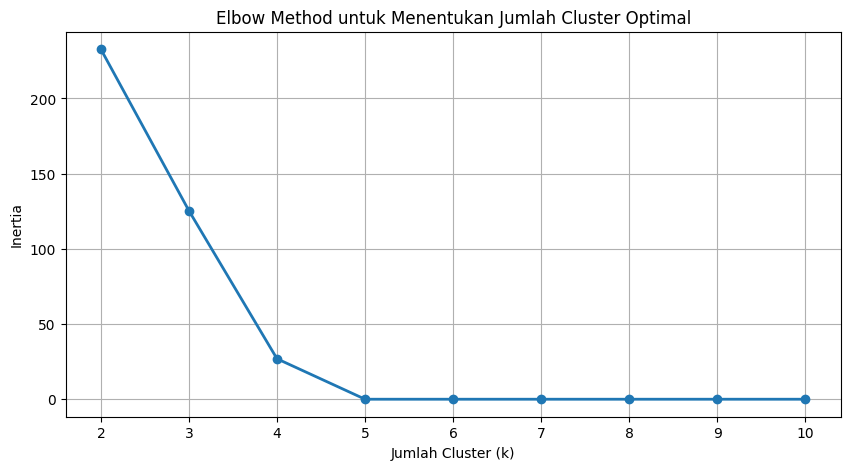
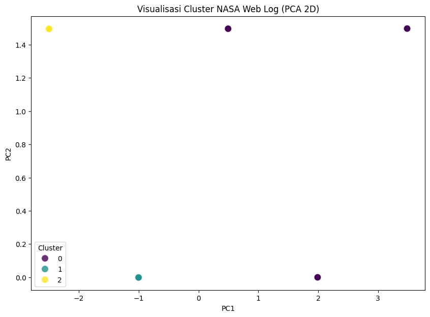
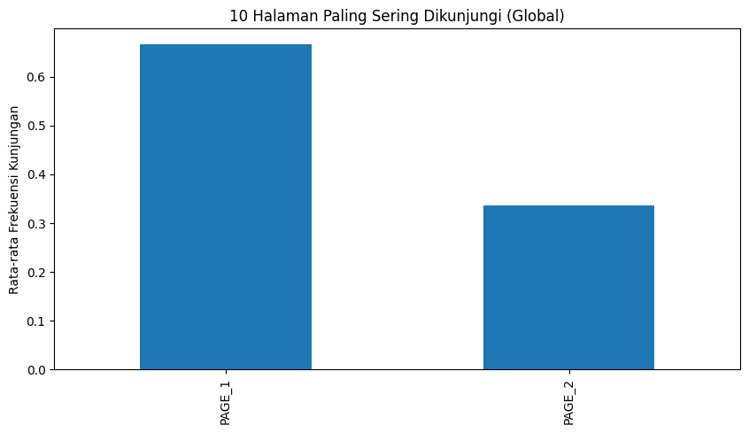
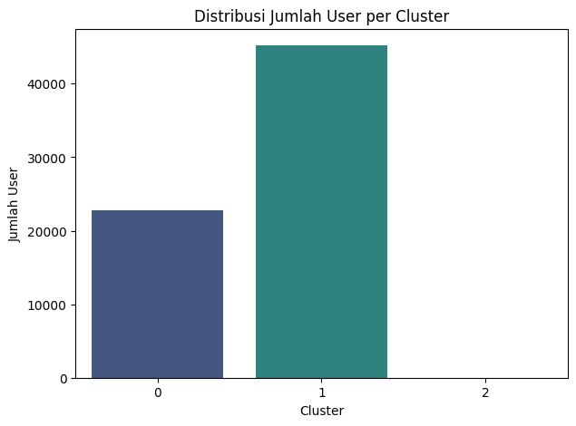

Filtrasi Dataset Webuage dan Nasa#
Pemrosesan data.csv#
from google.colab import drive
drive.mount('/content/drive')
---------------------------------------------------------------------------
ModuleNotFoundError Traceback (most recent call last)
Cell In[1], line 1
----> 1 from google.colab import drive
2 drive.mount('/content/drive')
ModuleNotFoundError: No module named 'google'
import pandas as pd
df = pd.read_csv("/content/drive/MyDrive/PPW/data.csv", sep=';')
df.head()
/tmp/ipython-input-1503009948.py:3: DtypeWarning: Columns (0) have mixed types. Specify dtype option on import or set low_memory=False.
df = pd.read_csv("/content/drive/MyDrive/PPW/data.csv", sep=';')
| Unnamed: 0 | host | time | method | url | response | bytes | |
|---|---|---|---|---|---|---|---|
| 0 | 0 | ***.novo.dk | 805465029 | GET | /ksc.html | 200 | 7067 |
| 1 | 1 | ***.novo.dk | 805465031 | GET | /images/ksclogo-medium.gif | 200 | 5866 |
| 2 | 2 | ***.novo.dk | 805465051 | GET | /images/MOSAIC-logosmall.gif | 200 | 363 |
| 3 | 3 | ***.novo.dk | 805465053 | GET | /images/USA-logosmall.gif | 200 | 234 |
| 4 | 4 | ***.novo.dk | 805465054 | GET | /images/NASA-logosmall.gif | 200 | 786 |
Filter URL yang HTML saja#
# Filter hanya baris dengan URL berakhiran ".html"
filtered_df = df[df['url'].str.endswith('.html', na=False)].copy()
# Simpan file baru
output_file = "filter_url.csv"
filtered_df.to_csv(output_file, sep=';', index=False)
print(f"\nBerhasil menyimpan data hasil filter HTML ke {output_file}")
filtered_df.head()
Berhasil menyimpan data hasil filter HTML ke filter_url.csv
| Unnamed: 0 | host | time | method | url | response | bytes | |
|---|---|---|---|---|---|---|---|
| 0 | 0 | ***.novo.dk | 805465029 | GET | /ksc.html | 200 | 7067 |
| 6 | 6 | ***.novo.dk | 805465068 | GET | /shuttle/missions/missions.html | 200 | 8678 |
| 12 | 12 | ***.novo.dk | 805465381 | GET | /shuttle/resources/orbiters/columbia.html | 200 | 6922 |
| 13 | 13 | ***.novo.dk | 807951768 | GET | /shuttle/missions/sts-69/mission-sts-69.html | 200 | 11264 |
| 23 | 23 | ***.novo.dk | 807951938 | GET | /shuttle/countdown/liftoff.html | 200 | 4665 |
Filter hanya Method GET#
# membaca file csv yg terakhir di save
df= pd.read_csv('/content/filter_url.csv', sep=';')
get = df[df['method']=="GET"].copy()
#simpan ke csv
get.to_csv('get.csv', sep=';', index=False)
print(f"\nBerhasil menyimpan data hasil filter method GET")
get.head()
/tmp/ipython-input-1333252841.py:2: DtypeWarning: Columns (0) have mixed types. Specify dtype option on import or set low_memory=False.
df= pd.read_csv('/content/filter_url.csv', sep=';')
Berhasil menyimpan data hasil filter method GET
| Unnamed: 0 | host | time | method | url | response | bytes | |
|---|---|---|---|---|---|---|---|
| 0 | 0 | ***.novo.dk | 805465029 | GET | /ksc.html | 200 | 7067 |
| 1 | 6 | ***.novo.dk | 805465068 | GET | /shuttle/missions/missions.html | 200 | 8678 |
| 2 | 12 | ***.novo.dk | 805465381 | GET | /shuttle/resources/orbiters/columbia.html | 200 | 6922 |
| 3 | 13 | ***.novo.dk | 807951768 | GET | /shuttle/missions/sts-69/mission-sts-69.html | 200 | 11264 |
| 4 | 23 | ***.novo.dk | 807951938 | GET | /shuttle/countdown/liftoff.html | 200 | 4665 |
Filter response == 200#
df = pd.read_csv('/content/get.csv', sep=';')
response= df[df['response']==200].copy()
#simpan ke csv
response.to_csv('response.csv', sep=';', index=False)
print(f"\nBerhasil menyimpan data hasil filter response==200")
response.head()
/tmp/ipython-input-2893179864.py:1: DtypeWarning: Columns (0) have mixed types. Specify dtype option on import or set low_memory=False.
df = pd.read_csv('/content/get.csv', sep=';')
Berhasil menyimpan data hasil filter response==200
| Unnamed: 0 | host | time | method | url | response | bytes | |
|---|---|---|---|---|---|---|---|
| 0 | 0 | ***.novo.dk | 805465029 | GET | /ksc.html | 200 | 7067 |
| 1 | 6 | ***.novo.dk | 805465068 | GET | /shuttle/missions/missions.html | 200 | 8678 |
| 2 | 12 | ***.novo.dk | 805465381 | GET | /shuttle/resources/orbiters/columbia.html | 200 | 6922 |
| 3 | 13 | ***.novo.dk | 807951768 | GET | /shuttle/missions/sts-69/mission-sts-69.html | 200 | 11264 |
| 4 | 23 | ***.novo.dk | 807951938 | GET | /shuttle/countdown/liftoff.html | 200 | 4665 |
Merubah Request Time menjadi tanggal dan waktunya saja#
df = pd.read_csv('/content/response.csv', sep=';')
#konversi ke datettime
df['datetime'] = pd.to_datetime(df['time'], unit='s')
#simpan ke csv
df.to_csv('datetime.csv', sep=';', index=False)
print(f"\nBerhasil menyimpan data hasil konversi time ke datetime")
df.head(15)
/tmp/ipython-input-161542820.py:1: DtypeWarning: Columns (0) have mixed types. Specify dtype option on import or set low_memory=False.
df = pd.read_csv('/content/response.csv', sep=';')
Berhasil menyimpan data hasil konversi time ke datetime
| Unnamed: 0 | host | time | method | url | response | bytes | datetime | |
|---|---|---|---|---|---|---|---|---|
| 0 | 0 | ***.novo.dk | 805465029 | GET | /ksc.html | 200 | 7067 | 1995-07-11 12:17:09 |
| 1 | 6 | ***.novo.dk | 805465068 | GET | /shuttle/missions/missions.html | 200 | 8678 | 1995-07-11 12:17:48 |
| 2 | 12 | ***.novo.dk | 805465381 | GET | /shuttle/resources/orbiters/columbia.html | 200 | 6922 | 1995-07-11 12:23:01 |
| 3 | 13 | ***.novo.dk | 807951768 | GET | /shuttle/missions/sts-69/mission-sts-69.html | 200 | 11264 | 1995-08-09 07:02:48 |
| 4 | 23 | ***.novo.dk | 807951938 | GET | /shuttle/countdown/liftoff.html | 200 | 4665 | 1995-08-09 07:05:38 |
| 5 | 26 | ***.novo.dk | 807952060 | GET | /shuttle/countdown/lps/fr.html | 200 | 1879 | 1995-08-09 07:07:40 |
| 6 | 29 | 001.msy4.communique.net | 809765747 | GET | /software/winvn/winvn.html | 200 | 9630 | 1995-08-30 06:55:47 |
| 7 | 41 | 007.thegap.com | 805065868 | GET | /shuttle/missions/sts-71/mission-sts-71.html | 200 | 12722 | 1995-07-06 21:24:28 |
| 8 | 44 | 007.thegap.com | 805066115 | GET | /shuttle/missions/sts-71/mission-sts-71.html | 200 | 12722 | 1995-07-06 21:28:35 |
| 9 | 46 | 007.thegap.com | 805066664 | GET | /shuttle/missions/sts-71/images/images.html | 200 | 7634 | 1995-07-06 21:37:44 |
| 10 | 52 | 007.thegap.com | 805073006 | GET | /shuttle/countdown/tour.html | 200 | 4347 | 1995-07-06 23:23:26 |
| 11 | 71 | 01-dynamic-c.wokingham.luna.net | 804944219 | GET | /shuttle/missions/sts-71/movies/movies.html | 200 | 3089 | 1995-07-05 11:36:59 |
| 12 | 80 | 01-dynamic-c.wokingham.luna.net | 805378707 | GET | /history/history.html | 200 | 1602 | 1995-07-10 12:18:27 |
| 13 | 83 | 01-dynamic-c.wokingham.luna.net | 805378737 | GET | /shuttle/missions/missions.html | 200 | 8678 | 1995-07-10 12:18:57 |
| 14 | 85 | 01-dynamic-c.wokingham.luna.net | 805541614 | GET | /shuttle/missions/sts-71/mission-sts-71.html | 200 | 13374 | 1995-07-12 09:33:34 |
Melakukan Session untuk menemukan pola#
import pandas as pd
# Memuat ulang DataFrame dan memastikan kolom 'datetime' adalah tipe datetime
df = pd.read_csv('/content/datetime.csv', sep=';')
df['datetime'] = pd.to_datetime(df['datetime'], errors='coerce')
# Sort dulu berdasarkan host & waktu
df = df.sort_values(by=['host', 'datetime'])
# Hitung selisih waktu antar request untuk tiap host
df['time_diff'] = df.groupby('host')['datetime'].diff()
# Tandai apakah memulai SESSION baru (jika gap > 30 menit)
df['new_session'] = (df['time_diff'] > pd.Timedelta(minutes=30)).astype(int)
# Hitung SESSION per host (cumsum)
df['SESSION'] = df.groupby('host')['new_session'].cumsum() + 1
# Step 5 - Tampilkan kolom final
df_session = df[['SESSION', 'host', 'datetime', 'url']]
# simpan ke csv
df_session.to_csv('hasil_session.csv', index=False)
df_session.head()
/tmp/ipython-input-1324058694.py:4: DtypeWarning: Columns (0) have mixed types. Specify dtype option on import or set low_memory=False.
df = pd.read_csv('/content/datetime.csv', sep=';', parse_dates=['datetime'])
| SESSION | host | datetime | url | |
|---|---|---|---|---|
| 0 | 1 | ***.novo.dk | 1995-07-11 12:17:09 | /ksc.html |
| 1 | 1 | ***.novo.dk | 1995-07-11 12:17:48 | /shuttle/missions/missions.html |
| 2 | 1 | ***.novo.dk | 1995-07-11 12:23:01 | /shuttle/resources/orbiters/columbia.html |
| 3 | 2 | ***.novo.dk | 1995-08-09 07:02:48 | /shuttle/missions/sts-69/mission-sts-69.html |
| 4 | 2 | ***.novo.dk | 1995-08-09 07:05:38 | /shuttle/countdown/liftoff.html |
import pandas as pd
df=pd.read_csv('/content/hasil_session.csv')
df["SESSION_ID"] = df["host"] + "_" + df["SESSION"].astype(str)
# BUAT DAFTAR HALAMAN (PAGE 1,2,3,...)
# ambil url unik
unique_pages = df["url"].unique()
# mapping: URL → PAGE_1, PAGE_2, …
page_map = {url: f"PAGE_{i+1}" for i, url in enumerate(unique_pages)}
# simpan hasil mapping sebagai kolom PAGE
df["PAGE"] = df["url"].map(page_map)
# MEMBUAT MATRICS FREKUENSI SESI × HALAMAN
freq_matrix = df.pivot_table(
index="SESSION_ID",
columns="PAGE",
values="url",
aggfunc="count"
).fillna(0).astype(int)
# jadikan SESSION_ID sebagai kolom
freq_matrix = freq_matrix.reset_index()
# tampilkan hasil
print("===== SAMPLE MATRIX SESI × PAGE =====")
print(freq_matrix.head())
print("Jumlah kolom:", len(freq_matrix.columns))
print("Jumlah sesi:", freq_matrix.shape[0])
freq_matrix.to_csv("session_page_matrix.csv", index=False)
===== SAMPLE MATRIX SESI × PAGE =====
PAGE SESSION_ID PAGE_1 PAGE_10 PAGE_100 PAGE_101 \
0 ***.novo.dk_1 1 0 0 0
1 ***.novo.dk_2 0 0 0 0
2 001.msy4.communique.net_1 0 0 0 0
3 007.thegap.com_1 0 0 0 0
4 007.thegap.com_2 0 1 0 0
PAGE PAGE_102 PAGE_103 PAGE_104 PAGE_105 PAGE_106 ... PAGE_90 PAGE_91 \
0 0 0 0 0 0 ... 0 0
1 0 0 0 0 0 ... 0 0
2 0 0 0 0 0 ... 0 0
3 0 0 0 0 0 ... 0 0
4 0 0 0 0 0 ... 0 0
PAGE PAGE_92 PAGE_93 PAGE_94 PAGE_95 PAGE_96 PAGE_97 PAGE_98 PAGE_99
0 0 0 0 0 0 0 0 0
1 0 0 0 0 0 0 0 0
2 0 0 0 0 0 0 0 0
3 0 0 0 0 0 0 0 0
4 0 0 0 0 0 0 0 0
[5 rows x 113 columns]
Jumlah kolom: 113
Jumlah sesi: 83034
pemrosesan data webuage#
import pandas as pd
data = pd.read_csv("/content/drive/MyDrive/PPW/webuage.csv")
data.head()
| Remote host | Remote logname | Remote user | Request time | Request method | Request URI | Request Protocol | Status | Size of response (incl. headers) | |
|---|---|---|---|---|---|---|---|---|---|
| 0 | 65.55.147.227 | - | - | 2009-10-15T02:00:24Z | GET | /index.html | HTTP/1.1 | 200 | 21878 |
| 1 | 65.55.86.34 | - | - | 2009-10-15T02:00:58Z | GET | /index.html | HTTP/1.1 | 200 | 1416 |
| 2 | 148.188.55.88 | - | - | 2009-10-15T02:01:41Z | GET | /faq.html | HTTP/1.1 | 200 | 10946 |
| 3 | 72.30.57.238 | - | - | 2009-10-15T02:01:59Z | GET | /contribute.txt | HTTP/1.0 | 200 | 39943 |
| 4 | 66.249.139.233 | - | - | 2009-10-15T02:02:09Z | GET | /faq.html | HTTP/1.1 | 200 | 17247 |
filtering hanya mengambil yang html saja#
# Filter hanya baris dengan URL berakhiran ".html"
step1 = data[data['Request URI'].str.endswith('.html', na=False)].copy()
# Simpan file baru
output_file = "step1_filter_html.csv"
step1.to_csv(output_file, sep=';', index=False)
print(f"\nBerhasil menyimpan data hasil filter HTML ke {output_file}")
step1.head()
Berhasil menyimpan data hasil filter HTML ke step1_filter_html.csv
| Remote host | Remote logname | Remote user | Request time | Request method | Request URI | Request Protocol | Status | Size of response (incl. headers) | |
|---|---|---|---|---|---|---|---|---|---|
| 0 | 65.55.147.227 | - | - | 2009-10-15T02:00:24Z | GET | /index.html | HTTP/1.1 | 200 | 21878 |
| 1 | 65.55.86.34 | - | - | 2009-10-15T02:00:58Z | GET | /index.html | HTTP/1.1 | 200 | 1416 |
| 2 | 148.188.55.88 | - | - | 2009-10-15T02:01:41Z | GET | /faq.html | HTTP/1.1 | 200 | 10946 |
| 4 | 66.249.139.233 | - | - | 2009-10-15T02:02:09Z | GET | /faq.html | HTTP/1.1 | 200 | 17247 |
| 5 | 72.30.50.248 | - | - | 2009-10-15T02:02:13Z | GET | /index.html | HTTP/1.0 | 200 | 7883 |
Filter status == 200#
step2 = step1[step1['Status'] == 200].copy()
output_file = "step2_status_200.csv"
step2.to_csv(output_file, sep=';', index=False)
print(f"\nBerhasil menyimpan data filter Status=200 ke {output_file}")
step2.head()
Berhasil menyimpan data filter Status=200 ke step2_status_200.csv
| Remote host | Remote logname | Remote user | Request time | Request method | Request URI | Request Protocol | Status | Size of response (incl. headers) | |
|---|---|---|---|---|---|---|---|---|---|
| 0 | 65.55.147.227 | - | - | 2009-10-15T02:00:24Z | GET | /index.html | HTTP/1.1 | 200 | 21878 |
| 1 | 65.55.86.34 | - | - | 2009-10-15T02:00:58Z | GET | /index.html | HTTP/1.1 | 200 | 1416 |
| 2 | 148.188.55.88 | - | - | 2009-10-15T02:01:41Z | GET | /faq.html | HTTP/1.1 | 200 | 10946 |
| 4 | 66.249.139.233 | - | - | 2009-10-15T02:02:09Z | GET | /faq.html | HTTP/1.1 | 200 | 17247 |
| 5 | 72.30.50.248 | - | - | 2009-10-15T02:02:13Z | GET | /index.html | HTTP/1.0 | 200 | 7883 |
Filter request method = GET#
step3 = step2[step2['Request method'] == "GET"].copy()
output_file = "step3_method_get.csv"
step3.to_csv(output_file, sep=';', index=False)
print(f"\nBerhasil menyimpan data filter GET ke {output_file}")
step3.head()
Berhasil menyimpan data filter GET ke step3_method_get.csv
| Remote host | Remote logname | Remote user | Request time | Request method | Request URI | Request Protocol | Status | Size of response (incl. headers) | |
|---|---|---|---|---|---|---|---|---|---|
| 0 | 65.55.147.227 | - | - | 2009-10-15T02:00:24Z | GET | /index.html | HTTP/1.1 | 200 | 21878 |
| 1 | 65.55.86.34 | - | - | 2009-10-15T02:00:58Z | GET | /index.html | HTTP/1.1 | 200 | 1416 |
| 2 | 148.188.55.88 | - | - | 2009-10-15T02:01:41Z | GET | /faq.html | HTTP/1.1 | 200 | 10946 |
| 4 | 66.249.139.233 | - | - | 2009-10-15T02:02:09Z | GET | /faq.html | HTTP/1.1 | 200 | 17247 |
| 5 | 72.30.50.248 | - | - | 2009-10-15T02:02:13Z | GET | /index.html | HTTP/1.0 | 200 | 7883 |
Convert Request Time → datetime#
step3["datetime"] = pd.to_datetime(step3["Request time"], format='ISO8601')
output_file = "step4_datetime.csv"
step3.to_csv(output_file, sep=';', index=False)
print(f"\nBerhasil convert datetime, disimpan ke {output_file}")
step3[['Request time', 'datetime']].head()
Berhasil convert datetime, disimpan ke step4_datetime.csv
| Request time | datetime | |
|---|---|---|
| 0 | 2009-10-15T02:00:24Z | 2009-10-15 02:00:24+00:00 |
| 1 | 2009-10-15T02:00:58Z | 2009-10-15 02:00:58+00:00 |
| 2 | 2009-10-15T02:01:41Z | 2009-10-15 02:01:41+00:00 |
| 4 | 2009-10-15T02:02:09Z | 2009-10-15 02:02:09+00:00 |
| 5 | 2009-10-15T02:02:13Z | 2009-10-15 02:02:13+00:00 |
Filter Berdasarkan Remote Host + Protocol#
step5 = step3[step3["Request Protocol"] == "HTTP/1.1"].copy()
output_file = "step5_filter_protocol.csv"
step5.to_csv(output_file, sep=';', index=False)
print(f"\nBerhasil filter berdasarkan protocol ke {output_file}")
step5.head()
Berhasil filter berdasarkan protocol ke step5_filter_protocol.csv
| Remote host | Remote logname | Remote user | Request time | Request method | Request URI | Request Protocol | Status | Size of response (incl. headers) | datetime | |
|---|---|---|---|---|---|---|---|---|---|---|
| 0 | 65.55.147.227 | - | - | 2009-10-15T02:00:24Z | GET | /index.html | HTTP/1.1 | 200 | 21878 | 2009-10-15 02:00:24+00:00 |
| 1 | 65.55.86.34 | - | - | 2009-10-15T02:00:58Z | GET | /index.html | HTTP/1.1 | 200 | 1416 | 2009-10-15 02:00:58+00:00 |
| 2 | 148.188.55.88 | - | - | 2009-10-15T02:01:41Z | GET | /faq.html | HTTP/1.1 | 200 | 10946 | 2009-10-15 02:01:41+00:00 |
| 4 | 66.249.139.233 | - | - | 2009-10-15T02:02:09Z | GET | /faq.html | HTTP/1.1 | 200 | 17247 | 2009-10-15 02:02:09+00:00 |
| 8 | 65.55.80.97 | - | - | 2009-10-15T02:02:51Z | GET | /index.html | HTTP/1.1 | 200 | 1416 | 2009-10-15 02:02:51+00:00 |
Sort by host + datetime#
step6 = step5.sort_values(by=["Remote host", "datetime"]).reset_index(drop=True)
output_file = "step6_sort.csv"
step6.to_csv(output_file, sep=';', index=False)
print(f"\nBerhasil sort data ke {output_file}")
step6.head()
Berhasil sort data ke step6_sort.csv
| Remote host | Remote logname | Remote user | Request time | Request method | Request URI | Request Protocol | Status | Size of response (incl. headers) | datetime | |
|---|---|---|---|---|---|---|---|---|---|---|
| 0 | 109.192.104.209 | - | - | 2009-10-18T18:27:27Z | GET | /index.html | HTTP/1.1 | 200 | 19395 | 2009-10-18 18:27:27+00:00 |
| 1 | 109.192.104.86 | - | - | 2009-10-18T18:27:27Z | GET | /index.html | HTTP/1.1 | 200 | 99209 | 2009-10-18 18:27:27+00:00 |
| 2 | 109.192.109.233 | - | - | 2009-10-18T18:26:27Z | GET | /faq.html | HTTP/1.1 | 200 | 757 | 2009-10-18 18:26:27+00:00 |
| 3 | 109.192.111.243 | - | - | 2009-10-18T20:59:37Z | GET | /index.html | HTTP/1.1 | 200 | 10937 | 2009-10-18 20:59:37+00:00 |
| 4 | 109.192.117.151 | - | - | 2009-10-18T18:26:27Z | GET | /index.html | HTTP/1.1 | 200 | 285 | 2009-10-18 18:26:27+00:00 |
Membentuk SESSION (timeout 30 menit)#
step6["SESSION"] = 0
session_id = 0
timeout = pd.Timedelta(minutes=30)
prev_host = None
prev_time = None
for i, row in step6.iterrows():
host = row["Remote host"]
time = row["datetime"]
# Host baru → session baru
if host != prev_host:
session_id += 1
else:
# Cek timeout 30 menit
if (time - prev_time) > timeout:
session_id += 1
step6.at[i, "SESSION"] = session_id
prev_host = host
prev_time = time
output_file = "step7_session.csv"
step6.to_csv(output_file, sep=';', index=False)
print(f"\nBerhasil membentuk SESSION ke {output_file}")
step6[["Remote host", "datetime", "SESSION"]].head()
Berhasil membentuk SESSION ke step7_session.csv
| Remote host | datetime | SESSION | |
|---|---|---|---|
| 0 | 109.192.104.209 | 2009-10-18 18:27:27+00:00 | 1 |
| 1 | 109.192.104.86 | 2009-10-18 18:27:27+00:00 | 2 |
| 2 | 109.192.109.233 | 2009-10-18 18:26:27+00:00 | 3 |
| 3 | 109.192.111.243 | 2009-10-18 20:59:37+00:00 | 4 |
| 4 | 109.192.117.151 | 2009-10-18 18:26:27+00:00 | 5 |
# Bentuk SESSION_ID unik per host
step6["SESSION_ID"] = step6["Remote host"] + "_" + step6["SESSION"].astype(str)
output_file = "step8_session_id.csv"
step6.to_csv(output_file, sep=';', index=False)
print(f"\nBerhasil menambah kolom SESSION_ID ke {output_file}")
step6[["SESSION_ID", "Remote host", "datetime"]].head()
Berhasil menambah kolom SESSION_ID ke step8_session_id.csv
| SESSION_ID | Remote host | datetime | |
|---|---|---|---|
| 0 | 109.192.104.209_1 | 109.192.104.209 | 2009-10-18 18:27:27+00:00 |
| 1 | 109.192.104.86_2 | 109.192.104.86 | 2009-10-18 18:27:27+00:00 |
| 2 | 109.192.109.233_3 | 109.192.109.233 | 2009-10-18 18:26:27+00:00 |
| 3 | 109.192.111.243_4 | 109.192.111.243 | 2009-10-18 20:59:37+00:00 |
| 4 | 109.192.117.151_5 | 109.192.117.151 | 2009-10-18 18:26:27+00:00 |
# Ambil semua halaman unik
unique_pages = step6["Request URI"].unique()
page_map = {url: f"PAGE_{i+1}" for i, url in enumerate(unique_pages)}
step6["PAGE"] = step6["Request URI"].map(page_map)
output_file = "step9_page_map.csv"
step6.to_csv(output_file, sep=';', index=False)
print(f"\nBerhasil mapping halaman ke {output_file}")
step6[["Request URI", "PAGE"]].head()
Berhasil mapping halaman ke step9_page_map.csv
| Request URI | PAGE | |
|---|---|---|
| 0 | /index.html | PAGE_1 |
| 1 | /index.html | PAGE_1 |
| 2 | /faq.html | PAGE_2 |
| 3 | /index.html | PAGE_1 |
| 4 | /index.html | PAGE_1 |
matrix = step6.pivot_table(
index="SESSION_ID",
columns="PAGE",
values="Request URI",
aggfunc="count"
).fillna(0).astype(int)
output_file = "step10_matrix.csv"
matrix.to_csv(output_file, sep=';')
print(f"\nBerhasil membuat matriks sesi-halaman ke {output_file}")
print(f"jumlah kolom: {len(matrix.columns)}")
print(f"jumlah sesi: {matrix.shape[0]}")
matrix.head()
Berhasil membuat matriks sesi-halaman ke step10_matrix.csv
jumlah kolom: 2
jumlah sesi: 68048
| PAGE | PAGE_1 | PAGE_2 |
|---|---|---|
| SESSION_ID | ||
| 109.192.104.209_1 | 1 | 0 |
| 109.192.104.86_2 | 1 | 0 |
| 109.192.109.233_3 | 0 | 1 |
| 109.192.111.243_4 | 1 | 0 |
| 109.192.117.151_5 | 1 | 0 |
Analisa Clustering Data Terakhir#
import pandas as pd
import numpy as np
import matplotlib.pyplot as plt
import seaborn as sns
from sklearn.cluster import KMeans
from sklearn.preprocessing import StandardScaler
from sklearn.decomposition import PCA
from sklearn.metrics import silhouette_score
# ==========================================
# 1. LOAD DATASET
# ==========================================
file_name = "step10_matrix.csv" # Changed from "user_page_frequency_matrix_NASA_aggregated.csv"
print(f"Memuat data dari {file_name}...\n")
df = pd.read_csv(file_name, sep=';')
# Pisahkan kolom ID (HOST/IP) dari fitur halaman
host_ids = df['SESSION_ID'] # Changed from 'HOST_ID'
X = df.drop(columns=['SESSION_ID']) # Changed from 'HOST_ID'
print("Jumlah user:", len(df))
print("Jumlah halaman:", X.shape[1])
# ==========================================
# 2. SCALING
# ==========================================
print("\nMelakukan standarisasi data...")
scaler = StandardScaler()
X_scaled = scaler.fit_transform(X)
# ==========================================
# 3. ELBOW METHOD
# ==========================================
print("\nMenghitung Elbow Method...")
inertia = []
range_values = range(2, 11) # mulai dari 2 cluster agar Elbow lebih jelas
for i in range_values:
kmeans = KMeans(n_clusters=i, random_state=42, n_init=10)
kmeans.fit(X_scaled)
inertia.append(kmeans.inertia_)
plt.figure(figsize=(10, 5))
plt.plot(range_values, inertia, 'o-', linewidth=2)
plt.title("Elbow Method untuk Menentukan Jumlah Cluster Optimal")
plt.xlabel("Jumlah Cluster (k)")
plt.ylabel("Inertia")
plt.grid(True)
plt.show()
# ==========================================
# 4. K-MEANS CLUSTERING
# ==========================================
# Pilih k berdasarkan Elbow (default 3)
k_optimal = 3
print(f"\nMelakukan K-Means Clustering (k={k_optimal})...")
kmeans = KMeans(n_clusters=k_optimal, random_state=42, n_init=10)
clusters = kmeans.fit_predict(X_scaled)
# Tambahkan hasil cluster
df_result = df.copy()
df_result["Cluster"] = clusters
# Evaluasi
sil = silhouette_score(X_scaled, clusters)
print(f"Silhouette Score = {sil:.4f}")
# ==========================================
# 5. PCA VISUALISASI
# ==========================================
print("\nMembuat visualisasi cluster dalam ruang 2D (PCA)...")
pca = PCA(n_components=2)
pca_components = pca.fit_transform(X_scaled)
df_pca = pd.DataFrame(pca_components, columns=["PC1", "PC2"])
df_pca["Cluster"] = clusters
plt.figure(figsize=(10, 7))
sns.scatterplot(data=df_pca, x="PC1", y="PC2",
hue="Cluster", palette="viridis", s=100, alpha=0.8)
plt.title("Visualisasi Cluster NASA Web Log (PCA 2D)")
plt.show()
# ==========================================
# 6. ANALISA / PROFILING CLUSTER
# ==========================================
print("\n================ PROFILING CLUSTER ================\n")
cluster_sizes = df_result["Cluster"].value_counts().sort_index()
total_users = len(df_result)
for c in range(k_optimal):
print(f"\n>>> CLUSTER {c}")
print(f"Jumlah User : {cluster_sizes[c]}")
print(f"Persentase : {cluster_sizes[c] / total_users * 100:.2f}%")
# Hitung rata-rata kunjungan halaman
cluster_mean = df_result[df_result["Cluster"] == c].drop(columns=["SESSION_ID", "Cluster"]).mean() # Changed from 'HOST_ID'
# Halaman yang paling sering dikunjungi pada cluster ini
top_pages = cluster_mean.sort_values(ascending=False).head(5)
print("Top 5 Halaman yang Sering Diakses:")
for page, value in top_pages.items():
print(f" - {page}: {value:.2f}")
# ==========================================
# 7. ANALISA TAMBAHAN (LEBIH DALAM)
# ==========================================
print("\n================ ANALISA TAMBAHAN ================\n")
# --- Halaman top di seluruh dataset ---
print("\nHALAMAN PALING RAMAI SECARA GLOBAL:")
total_mean = X.mean().sort_values(ascending=False).head(10)
print(total_mean)
plt.figure(figsize=(10,5))
total_mean.plot(kind='bar')
plt.title("10 Halaman Paling Sering Dikunjungi (Global)")
plt.ylabel("Rata-rata Frekuensi Kunjungan")
plt.show()
# --- Distribusi jumlah user tiap cluster ---
plt.figure(figsize=(7,5))
sns.countplot(x=df_result["Cluster"], palette="viridis")
plt.title("Distribusi Jumlah User per Cluster")
plt.xlabel("Cluster")
plt.ylabel("Jumlah User")
plt.show()
# ==========================================
# 8. SIMPAN FILE
# ==========================================
df_result.to_csv("hasil_clustering_nasa_complete.csv", index=False)
print("\nHASIL BERHASIL DISIMPAN: hasil_clustering_nasa_complete.csv\n")
Memuat data dari step10_matrix.csv...
Jumlah user: 68048
Jumlah halaman: 2
Melakukan standarisasi data...
Menghitung Elbow Method...
/usr/local/lib/python3.12/dist-packages/sklearn/base.py:1389: ConvergenceWarning: Number of distinct clusters (5) found smaller than n_clusters (6). Possibly due to duplicate points in X.
return fit_method(estimator, *args, **kwargs)
/usr/local/lib/python3.12/dist-packages/sklearn/base.py:1389: ConvergenceWarning: Number of distinct clusters (5) found smaller than n_clusters (7). Possibly due to duplicate points in X.
return fit_method(estimator, *args, **kwargs)
/usr/local/lib/python3.12/dist-packages/sklearn/base.py:1389: ConvergenceWarning: Number of distinct clusters (5) found smaller than n_clusters (8). Possibly due to duplicate points in X.
return fit_method(estimator, *args, **kwargs)
/usr/local/lib/python3.12/dist-packages/sklearn/base.py:1389: ConvergenceWarning: Number of distinct clusters (5) found smaller than n_clusters (9). Possibly due to duplicate points in X.
return fit_method(estimator, *args, **kwargs)
/usr/local/lib/python3.12/dist-packages/sklearn/base.py:1389: ConvergenceWarning: Number of distinct clusters (5) found smaller than n_clusters (10). Possibly due to duplicate points in X.
return fit_method(estimator, *args, **kwargs)

Melakukan K-Means Clustering (k=3)...
Silhouette Score = 0.9993
Membuat visualisasi cluster dalam ruang 2D (PCA)...

================ PROFILING CLUSTER ================
>>> CLUSTER 0
Jumlah User : 22811
Persentase : 33.52%
Top 5 Halaman yang Sering Diakses:
- PAGE_2: 1.00
- PAGE_1: 0.00
>>> CLUSTER 1
Jumlah User : 45213
Persentase : 66.44%
Top 5 Halaman yang Sering Diakses:
- PAGE_1: 1.00
- PAGE_2: 0.00
>>> CLUSTER 2
Jumlah User : 24
Persentase : 0.04%
Top 5 Halaman yang Sering Diakses:
- PAGE_1: 2.00
- PAGE_2: 0.00
================ ANALISA TAMBAHAN ================
HALAMAN PALING RAMAI SECARA GLOBAL:
PAGE_1 0.665457
PAGE_2 0.335307
dtype: float64

/tmp/ipython-input-3898604425.py:127: FutureWarning:
Passing `palette` without assigning `hue` is deprecated and will be removed in v0.14.0. Assign the `x` variable to `hue` and set `legend=False` for the same effect.
sns.countplot(x=df_result["Cluster"], palette="viridis")

HASIL BERHASIL DISIMPAN: hasil_clustering_nasa_complete.csv